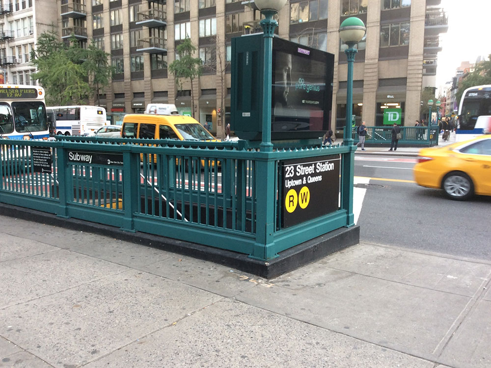
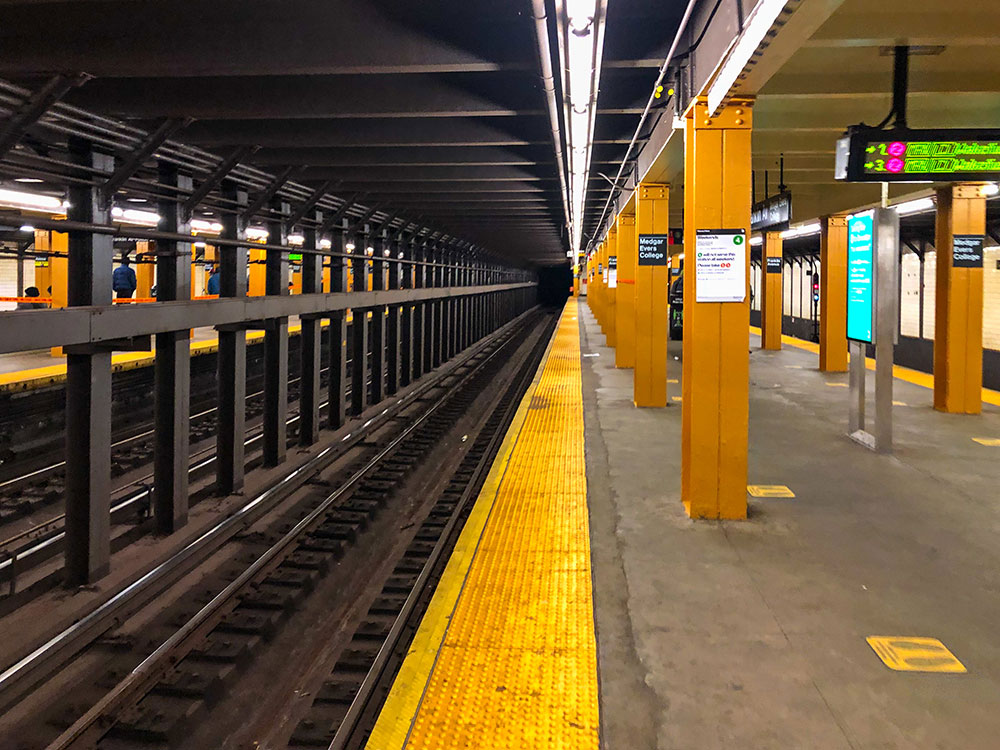
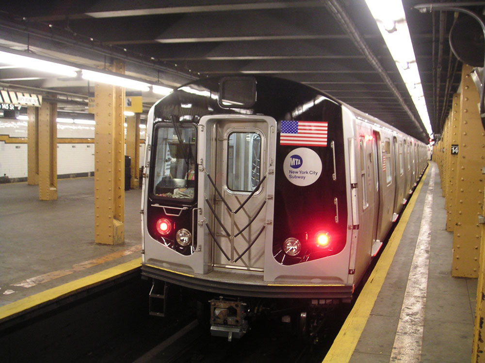
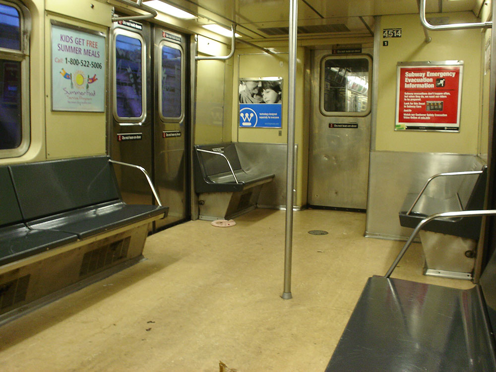
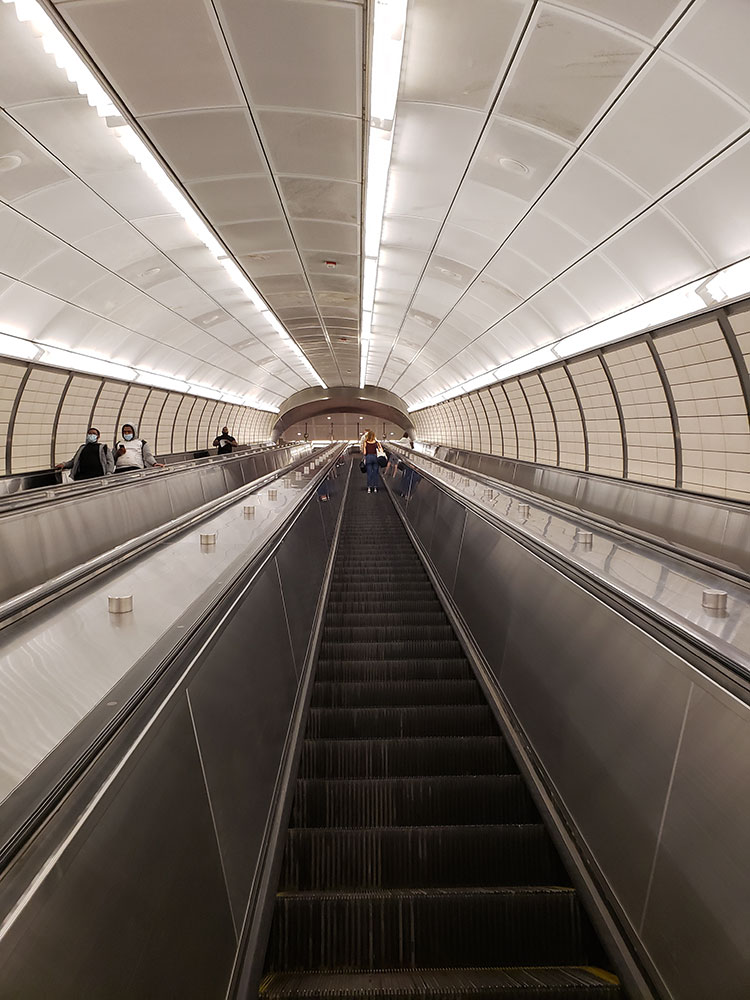
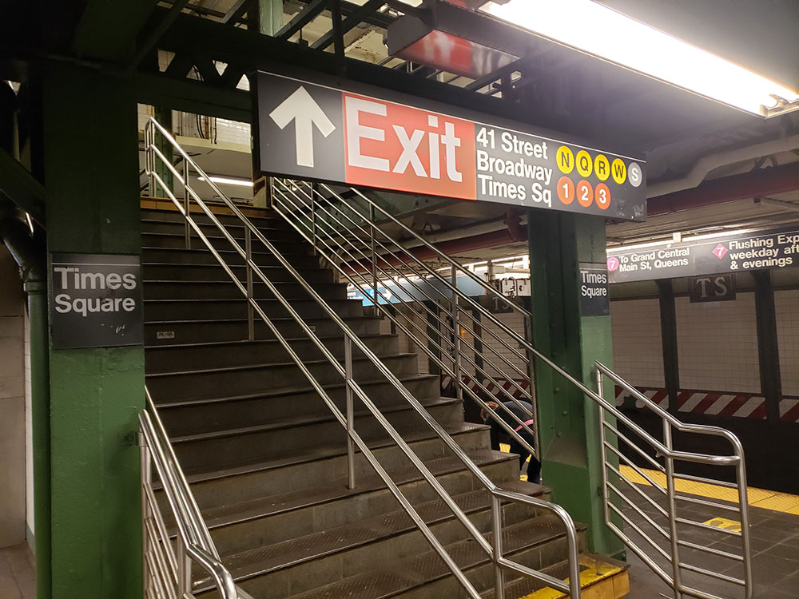
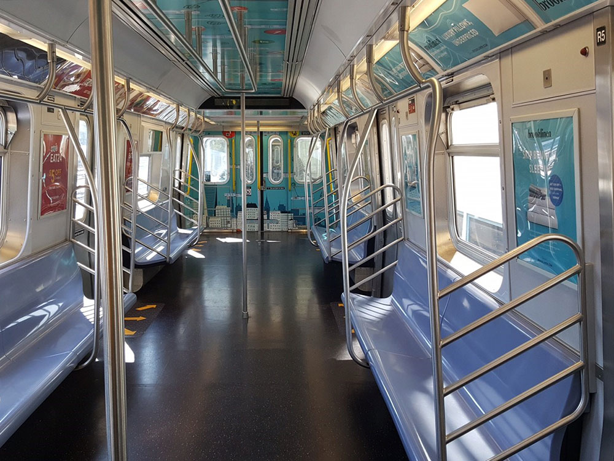
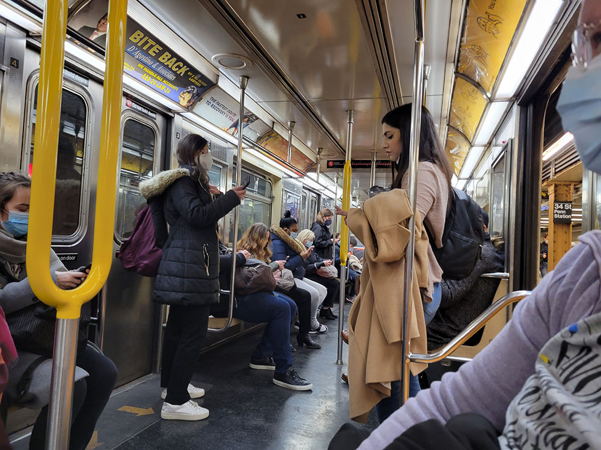
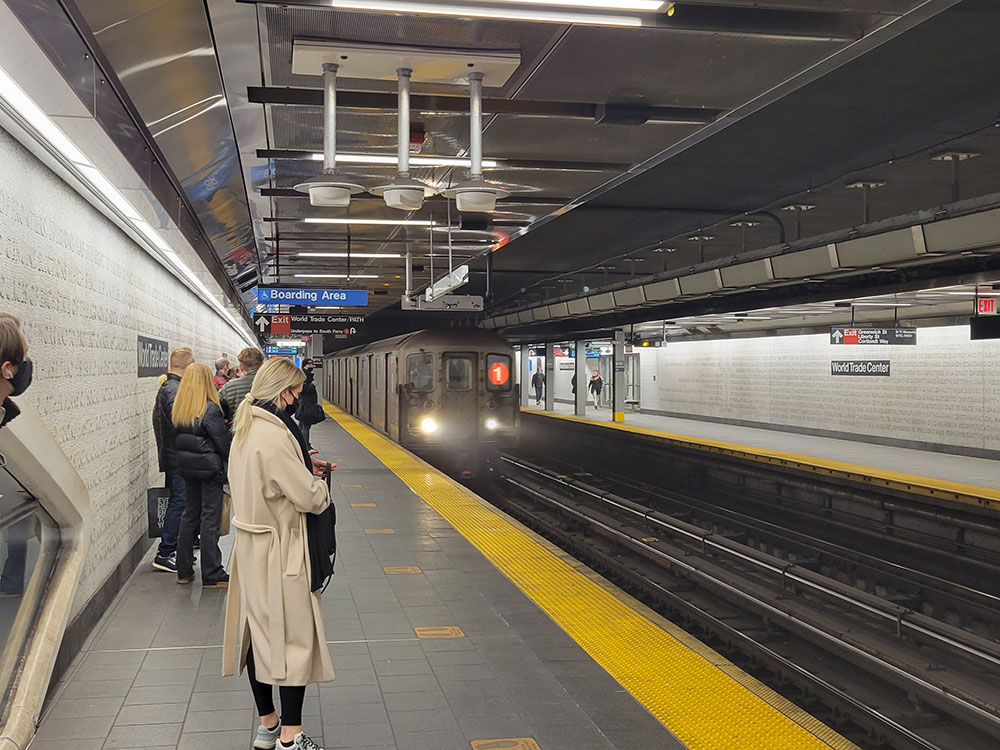

Rapid transit system owned by the City of New York and opened on October 27, 1904, is one of the world's oldest public transit systems, one of the most-used, and the one with the most stations
General Information
Churchyard open from 7am to 6pm daily
The New York City Subway is a rapid transit system owned by the City of New York and leased to the New York City Transit Authority, an affiliate agency of the state-run Metropolitan Transportation Authority (MTA). Opened on October 27, 1904, the New York City Subway is one of the world's oldest public transit systems, one of the most-used, and the one with the most stations. The New York City Subway is the largest rapid transit system in the world by number of stations, with 472 stations in operation. Stations are located throughout the boroughs of Manhattan, Brooklyn, Queens, and the Bronx.
The system has operated 24/7 service every day of the year throughout most of its history, barring emergencies and disasters. By annual ridership, the New York City Subway is the busiest rapid transit system in both the Western Hemisphere and the Western world, as well as the seventh-busiest rapid transit rail system in the world. In 2017, the subway delivered over 1.72 billion rides, averaging approximately 5.6 million daily rides on weekdays and a combined 5.7 million rides each weekend (3.2 million on Saturdays, 2.5 million on Sundays). On September 23, 2014, more than 6.1 million people rode the subway system, establishing the highest single-day ridership since ridership was regularly monitored in 1985.
Out of the 472 stations, 470 are served 24 hours a day.[note 9] Underground stations in the New York City Subway are typically accessed by staircases going down from street level. Many of these staircases are painted in a common shade of green, with slight or significant variations in design. Other stations have unique entrances reflective of their location or date of construction. Several station entrance stairs, for example, are built into adjacent buildings. Nearly all station entrances feature color-coded globe or square lamps signifying their status as an entrance. The current number of stations is smaller than the peak of the system. In addition to the demolition of former elevated lines, which collectively have resulted in the demolition of over a hundred stations, other closed stations and unused portions of existing stations remain in parts of the system.
Many stations in the subway system have mezzanines. Mezzanines allow for passengers to enter from multiple locations at an intersection and proceed to the correct platform without having to cross the street before entering. Inside mezzanines are fare control areas, where passengers physically pay their fare to enter the subway system. In many older stations, the fare control area is at platform level with no mezzanine crossovers. Many elevated stations also have platform-level fare control with no common station house between directions of service.
Upon entering a station, passengers may use station booths (formerly known as token booths) or vending machines to buy their fare, which is currently stored in a MetroCard. Each station has at least one booth, typically located at the busiest entrance. After swiping the card at a turnstile, customers enter the fare-controlled area of the station and continue to the platforms. Inside fare control are "Off-Hours Waiting Areas", which consist of benches and are identified by a yellow sign.
A typical subway station has waiting platforms ranging from 480 to 600 feet (150 to 180 m) long. Some are longer. Platforms of former commuter rail stations—such as those on the IND Rockaway Line, are even longer. With the many different lines in the system, one platform often serves more than one service. Passengers need to look at the overhead signs to see which trains stop there and when, and at the arriving train to identify it.
There are a number of common platform configurations. On a double track line, a station may have one center island platform used for trains in both directions, or two side platforms, one for each direction. For lines with three or four tracks with express service, local stops will have side platforms and the middle one or two tracks will not stop at the station. On these lines, express stations typically have two island platforms, one for each direction. Each island platform provides a cross-platform interchange between local and express services. Some lines with four-track express service have two tracks each on two levels and use both island and side platforms.
Riders pay a single fare to enter the subway system and may transfer between trains at no extra cost until they exit via station turnstiles; the fare is a flat rate regardless of how far or how long the rider travels. Thus, riders must swipe their MetroCard or tap a contactless payment card or smartphone on an OMNY reader upon entering the subway system, but not a second time upon leaving.
As of September 2020, nearly all fares are paid by MetroCard or OMNY. The base fare is $2.75 when purchased in the form of a reusable "pay per ride" MetroCard, with the last fare increase occurring on March 22, 2015. Single-use cards may be purchased for $3.00, and 7-day and 30-day unlimited ride cards can lower the effective per-ride fare significantly. Reduced fares are available for the elderly and people with disabilities. Fares paid with OMNY are identical to those paid with a pay-per-ride MetroCard; there are no options for single-ride or unlimited OMNY payments as of September 2020.
In November 1993, a fare system called the MetroCard was introduced, which allows riders to use magnetic stripe cards that store the value equal to the amount paid to a subway station booth clerk or vending machine. The MetroCard was enhanced in 1997 to allow passengers to make free transfers between subways and buses within two hours; several MetroCard-only transfers between subway stations were added in 2001. With the addition of unlimited-ride MetroCards in 1998, the New York City Transit system was the last major transit system in the United States with the exception of BART in San Francisco to introduce passes for unlimited bus and rapid transit travel. Unlimited-ride MetroCards are available for 7-day and 30-day periods. One-day "Fun Pass" and 14-day cards were also introduced, but have since been discontinued.
On October 23, 2017, it was announced that the MetroCard would be phased out and replaced by OMNY, a contactless fare payment system by San Diego-based Cubic Transportation Systems, with fare payment being made using Apple Pay, Google Pay, debit/credit cards with near-field communication technology, or radio-frequency identification cards. All buses and subway stations will be compatible with electronic fare collection by late 2020 or early 2021. Support of the MetroCard is intended to remain until 2023.
Overview
The New York City Subway opened on October 27, 1904 and is the busiest rapid transit system in the Western Hemisphere, with 472 stations, 470 of them open 24 hours a day, every day of the year. It is owned by the city and operated by the MTA's New York City Transit.
Riding Tips
- Fare: a flat fare covers any distance, with free transfers between trains until you exit; pay with OMNY contactless or a MetroCard
- Stations: entrances are stairways from the street, many painted green, with mezzanines leading to platforms about 480 to 600 feet long; on lines with express service, check whether a train is local or express
- Museum: see the New York Transit Museum in Brooklyn Heights for the system's history
This article uses material from the Wikipedia articles and official tourism pages for MTA Riding the Subway Guide, New York City Subway, released under the Creative Commons Attribution-Share-Alike License 3.0.











.jpg){kind=link}

